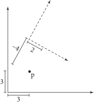
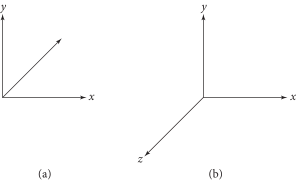

3.1 坐标系（Coordinate Systems）
鉴于计算机图形学中的常识， pbrt 使用三个坐标值：\( x \) ，\( y \) 和 \( z \) 来表示三维空间中的点（points）、向量（vectors）和法向量（normal vectors）。这些值在没有定义空间原点并给出三个定义 \( x \) 、 \( y \) 和 \( z \) 轴的线性无关向量的 坐标系（coordinate system） 中是没有意义的。原点和三个向量统称为定义坐标系的 框架（frame） 。给定三维中的任意点或方向，其 \( (x,y,z) \) 坐标值取决于它与框架的关系。图 3.1 显示了一个在二维中说明这一概念的例子。
图 3.1： 在二维空间中，点 \( \text{p} \) 的坐标 \( (x,y) \) 由该点与特定二维坐标系的关系定义。这里显示了两个坐标系；相对于坐标轴用实线绘制的坐标系，该点的坐标可能为 \( (3,3) \) ，但相对于坐标轴为虚线的坐标系，其坐标可能为 \( (2,-4) \) 。无论哪种情况，二维点 \( \text{p} \) 在空间中的绝对位置是相同的。
在一般的 \( n \) 维情况下，一个框架的原点 \( \text{p}_\text{o} \) 及其 \( n \) 个线性无关的基向量（basis vectors）定义了一个 \( n \) 维 仿射空间（affine space） 。该空间中的所有向量 \( \mathbf{v} \) 都可以表示为基向量的线性组合。给定一个向量 \( \mathbf{v} \) 和基向量 \( \mathbf{v}_i \) ，存在一组唯一的标量值 \( s_i \) ，使得
\[
\mathbf{v} = s_1\mathbf{v}_1 + \cdots + s_n\mathbf{v}_n
\]
标量 \( s_i \) 是向量 \( \mathbf{v} \) 相对于基向量 \( \{ \mathbf{v}_1,\mathbf{v}_2,\cdots,\mathbf{v}_n \} \) 的 表示形式（representation），并且是我们与向量一起存储的坐标值。同样，对于所有点 \( \text{p} \) ，存在唯一的标量 \( s_i \) ，使得该点可以用原点 \( \text{p}_\text{o} \) 和基向量表示
\[
\text{p} = \text{p}_\text{o} + s_1\mathbf{v}_1 + \cdots + s_n\mathbf{v}_n
\]
注意，尽管点和向量在三维空间中都由 \( x \) 、 \( y \) 和 \( z \) 坐标表示，但它们是不同的数学实体，不能随意交换。
这种通过坐标系统定义点和向量的方式揭示了一个悖论：要定义一个框架，我们需要一个点和一组向量，但我们只能在特定框架下才能有意义地讨论点和向量。因此，在三维空间中，我们需要一个有原点 \( (0,0,0) \) 和基向量 \( (1,0,0) \) 、 \( 0,1,0 \) 和 \( 0,0,1 \) 的 标准框架（standard frame） 。所有其他框架将相对于这个我们称为 世界空间（world space） 的标准坐标系进行定义。
3.1.1 坐标系的左右手性（Coordinate System Handedness）
三条坐标轴可以以两种不同的方式排列，如图 3.2 所示。给定垂直的 \( x \) 和 \( y \) 坐标轴， \( z \) 轴可以指向两个方向中的一个。这两种选择被称为 左手坐标系（left-handed） 和 右手坐标系（right-handed）。两者之间的选择是任意的，但对系统中某些几何操作的实现有许多影响。 pbrt 使用左手坐标系。
图 3.2： （a）在左手坐标系中，当 \( x \) 轴指向右侧和 \( y \) 轴指向上方时， \( z \) 轴指向屏幕内。（b）在右手坐标系中， \( z \) 轴指向屏幕外。